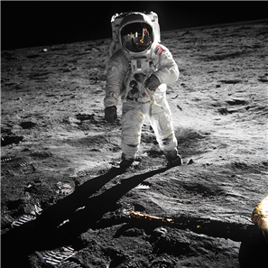

Every day people are presented with decisions that will impact their lives and the lives of others. Some decisions are simple to make, particularly if a person has a strong sense of what is right or appropriate. For example, most people believe murder is wrong, and therefore sentencing a mass murderer to prison would not be a difficult decision for most people to support.
Some decisions are more complex, however. Most people value human life. Deciding whether a convicted murderer should receive the death penalty forces a person to consider whether all human life should be valued equally. People are forced to weigh the risk of accidentally executing an innocent person against the sense of retribution and potential deterrence of a crime that could come from executing murderers. People must decide whether or not it is right for the state to take a human life. Other difficult and controversial issues place people in conflict over the very definition of human life.
The positions people take and the decisions people make on such issues are often guided by a system of beliefs and values each person has developed.
In this lesson, you will explore the question: What are beliefs and values?

Where do beliefs come from? They come from the experiences people have and the influences that they encounter as they move through life. Throughout your life, you are exposed to countless ideas – religious, scientific, political, and cultural. Some of these ideas you accept while others you may reject. Those ideas you accept eventually form a set of beliefs and values that you use to help you interpret the world around you and your place in it.
One of the challenges that you will constantly face as a consumer of information is deciding for yourself what to accept as truth. After all, it is possible to believe things that are not true. Some conspiracy theorists believe that the Apollo moon landings were faked by the U.S. government and that the television signals showing astronauts walking on the moon were beamed from a secret movie set somewhere in the United States.
These conspiracy theorists often support their claims by noting perceived inconsistencies in moon landing photos and by providing quasi-scientific reasons why a manned space flight to the moon would be impossible. Taken on their own, the arguments laid out in support of conspiracy theorists' beliefs can seem quite convincing (if you ignore the logical fallacies).
However, a little research reveals that a wide variety of reputable individuals have systematically refuted each argument provided by conspiracy theorists. There is an overwhelming amount of evidence that has been drawn from many independent sources which prove the moon landings did occur. It is this wealth of evidence that confirms the manned moon landings as “truth” and not, as conspiracy theorists might argue, ‘manufactured belief’. As you move through this course, and indeed through life, you must think critically about the information presented to you. Make it a practice to get as much factual data as you can and carefully weigh the validity of all of the arguments for and against before accepting something as truth or rejecting it as a falsehood.
Think about your beliefs and values, those of others, and the factors that have shaped those beliefs and values.
See the statements of opinion on the topics below. Choose one statement that interests you and think about your opinion on the topic. Create your own.
| Speaker Statements | Belief / Value |
|---|---|
| “I won’t work overtime because spending time with my kids and mental health is more important than money. | family |
| “As far as I’m concerned, you should throw most criminals in prison and throw away the key." | law, order, justice |
| "The government planned the pandemic so they would have an excuse to reduce people's rights." | freedom |
| “Guns don’t kill people, people kill people. Laws that limit gun ownership unfairly restrict the rights of law–abiding citizens.” | gun control |
| “If a person is suffering a slow and painful death from a terminal illness, there should be an option to give them an overdose of painkillers and end their suffering.” | euthanasia |
| “The whole notion of having a separate system for teenage criminals is wrong. If a 14-year-old murders someone, they should automatically receive the same penalty as an adult murderer who killed in the same circumstance.” | young offenders |
Belief: a notion, conviction, or impression that an individual or group accepts as true.
Value: a principle, philosophy, or code that defines what is important or desirable.
In this lesson, you have learned the specific meanings of the terms belief and values. You have begun to develop an awareness of the factors that can influence a person's beliefs and systems of values. Most importantly, you have embarked on an exploration of the roots of your own beliefs and values and have started to assess your beliefs and values about those of other people.
Can you think of some other notions, beliefs, or perhaps “internet myths” that could easily be discounted if people took more time to examine the facts and engage in critical thinking?
Do you believe arguments that are based on logical fallacies?